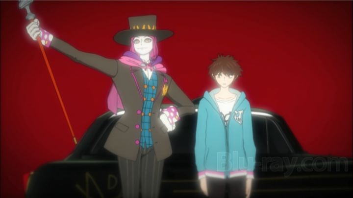

Along with the 2012 anime "K," the 2011 series "C" ties for the award of "most difficult to find in Google." Thankfully, it has a subtitle: the full title is referred to as "C: Control - Money and Soul of Possibility." That wins the award for "most stupid anime title," although that award gets a lot of competition in the 2010's decade. The plot of "C - Control" is also not very subtle, but since it's relatable to the modern person, and the show has a fun and colorful presentation in it's favor, one could have a decent time in watching it.That "not-so-subtle" plot is about money and how it controls our lives. Kimimaro Yoga is a college student with a typical dream of being financially stable. With not much money in his account, he holds multiple part-time jobs, and doesn't have a cell-phone, trying his best to make ends meet while, hopefully, saving up a little. Naturally, this affects his social life: he has none, and doesn't mind, although he doesn't look very cool asking for help from a cute girl in his class when he misses school. Basically, Yoga's a kid I relate to more than most anime teenagers. One day, a mysterious agent named Masakaki (with a white face, purple suit and a strange laugh, he looks like a derivitive of Batman's Joker) offers Yoga a chance to earn a lot of money in a short amount of time. He just has to offer his "future" as collateral, and then he is open to compete in an alternate finance world. Yoga agrees, and is given access to the Financial District, as well as his own "Asset" creature (in this case, a girl-demon named Mashu). Yoga, now an "Entre," competes against other Entres in metaphorical battles that represent the stock market. It's a bizarre "Digimon"-like premise inspred by anxieties all people in first-world countries face. Not surprisingly, the two things don't blend well. The financial battles are meant to have some form of strategy behind them, with attacks based on basic moves in the real financial world, like making "large purchases" or "sells." But there are only so many real-world metaphors for this, so battles, while flashy, get boring quick. The real draw is in two parts: the lore of this Financial District and how its visitors came to be part of it, and how having money (or not having it) affects them directly in the real world. Losing a battle can mean losing everything, and with your literal 'future' as collateral, the consequences have weight: not unlike modern headlines, a player might commit suicide, leaving behind friends or family, due to either greed, or simply having no other option to survive. After the still relevant Great Recession in the USA, the topic is topical. While the show's story might be a bit more confusing and clumsy than it needed to be, the battles and character-driven drama make it a little more fun to watch. But another downside is the ending. It has an exciting non-ending, with the ability to expand in an interesting direction, if a second season or manga were to continue to story. But such a thing never came about. Even though I watched the finally episode with great interest, the returns were ultimately unstatisfying (a financial pun! Get it! Heh...).  Visually, the show looks cool... sort of. The visual diversity of the Financial Distrinct never felt quite right, with the Asset designs being the most at odds, and Masakaki's design being a bit too obvious. The Asset designs should have been the easiest to market merchandise of the show, so not getting that right is distracting. Otherwise, the character designs of humans look cool, and the color-palette is unique in a pleasing sort-of-way. 3D CGI gets used a bit too often in action scenes, and overall, I defintely felt I was just watching a television series, something that didn't aspire to look any better than that. The music is modern, and its techno-battle themes feel at home in the show and on my playlist. The English dub is generally good, but not exceptional."C - Control" is an easy show to recommend to teenagers looking to get into anime. It's relatively recent and easy to find. While it could have gone on for dozens of seasons, it's a brisk watch at only 11 episodes. While the story might seem complicated, and doesn't successfully pull everything off, it's immediately relatable and fun to follow, using a familiar shonen-style premise. Not bad. Call me when there's a second season.
- "Ani" More reviews can be found at : https://2danicritic.github.io/ Previous review: review_Bunuel_in_the_Labyrinth_of_the_Turtles Next review: review_Canaan